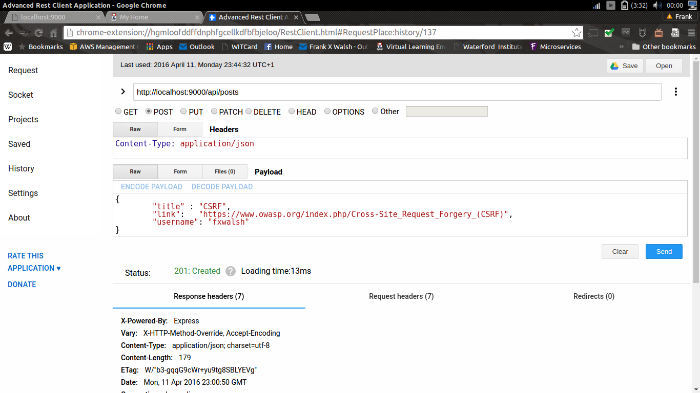
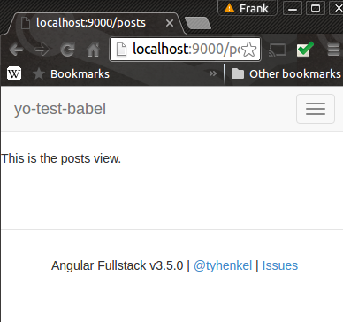
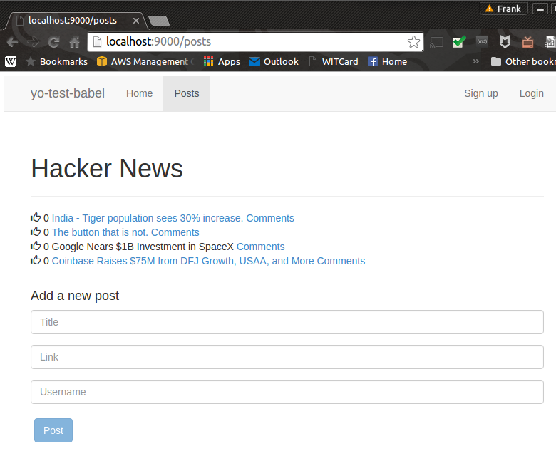

In this lab you will use a scaffolding tool to build a full stack web application for Hacker News.
In this lab we will develop the "Hacker News" posts API. The routes supported by the web API are:
Make sure you have MongoDB and Git installed on your local machine
Download and install generator-angular-fullstack.
npm install –g yo grunt-cli bower
npm install -g generator-angular-fullstack
Make a new folder and generate the application in that folder
mkdir yo-hacker-news
cd yo-hacker-news
yo angular-fullstack
You will be asked to configure your app. Accept the default values for all values except: - for client routing choose ng-route - for styling select CSS instead of Sass. - say No to sockets
If everything installed correctly, running grunt serve should start the generated app with a welcome screen. We can leave this terminal open to keep our server alive while we edit it.
Create a new terminal and cd into the project folder for running additional generators.
Take a moment to examine the project structure:
├── client
│ ├── app - All of our app specific components go in here
│ ├── assets - Custom assets: fonts, images, etc…
│ ├── components - Our reusable components, non-specific to to our app
│
├── e2e - Our protractor end to end tests
│
└── server
├── api - Our apps server api
├── auth - For handling authentication with different auth strategies
├── components - Our reusable or app-wide components
├── config - Where we do the bulk of our apps configuration
│ └── local.env.js - Keep our environment variables out of source control.
│ └── environment - Configuration specific to the environment the server is being run in
└── views - Server rendered views
Thats an overview of the structure, lets drill down little on a client component.
main
├── main.controller.js - Controller for our main route
├── main.controller.spec.js - Our test
├── main.html - Our view
├── main.js - Registers the route
└── main.css - Our styles
This structure allows for quite a bit of modularity, but it groups things together logically, so you have an easier time working on a component, and an easier time extracting it out into another project later.
First you will create the server side end point for the posts. To generate a generic posts endpoint using the endpoint generator:
yo angular-fullstack:endpoint post
[?] What will the url of your endpoint to be? /api/posts
The endpoint that generates should be accessible now. Yeoman will have created the requires files in /server/api/posts and updated the server/routes.js file accordingly. If you navigate your browser to localhost:9000/api/posts, you should see an empty array as the response.
Yeoman would have generated a "vanilla" mongoose model in /server/api/post/post.model.js. Open the generated model in a text editor and create the following Schema.
// server/api/comment/post.model.js
'use strict';
var mongoose = require('mongoose'),
Schema = mongoose.Schema;
var CommentSchema = new Schema({
body: { type: String, required: true },
author: { type: String, required: true },
upvotes: Number
});
var PostSchema = new Schema({
title: { type: String, required: true },
link: { type: String, optional: true },
username: { type: String, required: true },
comments: [CommentSchema],
upvotes: Number
});
module.exports = mongoose.model('posts', PostSchema);
For our posts, we need a title field and a link. There is also a comments field that contains an array of comments.
Automating database seeding is common technique during app development and is provided for in the scaffolded project. Open /server/config/seed.js and add the following code:
import Post from '../api/post/post.model';
Post.find({}).remove(function() {
Post.create( {
title : 'India - Tiger population sees 30% increase.',
link: 'http://www.bbc.com/news/world-asia-30896028',
username: 'jbloggs',
comments : [],
upvotes: 0
}, {
title : 'The button that is not.',
link: 'http://blog.nuclearsecrecy.com/2014/12/15/button-isnt/',
username: 'psmith',
comments : [],
upvotes: 0
}, {
title : 'Google Nears $1B Investment in SpaceX',
link: null,
username: 'aoneill',
comments : [],
upvotes: 0
}, {
title : 'Coinbase Raises $75M from DFJ Growth, USAA, and More',
link: 'http://blog.coinbase.com/post/108642362357/coinbase-raises-75m-from-dfj-growth-usaa-nyse',
username: 'jmarino',
comments : [],
upvotes: 0
});
});
Update /server/api/post/index.js to match the API design:
var express = require('express');
var controller = require('./posts.controller');
var router = express.Router();
router.get('/', controller.index);
router.get('/:id', controller.show);
router.post('/', controller.create);
router.post('/:id/upvotes', controller.update_upvotes);
router.post('/:id/comments', controller.add_comment);
router.post('/:post_id/comments/:comment_id/upvotes', controller.update_comment_upvotes);
module.exports = router;
Replace the contents of /server/api/posts/post.controller.js with the following:
var _ = require('lodash')
var Post = require('./post.model');
function handleError(res, err) {
return res.send(500, err);
}
exports.index = function(req, res) {
Post.find(function (err, posts) {
if(err) { return handleError(res, err); }
return res.json(200, posts);
});
} ;
exports.create = function(req, res) {
req.body.comments = []
req.body.upvotes = 0
Post.create(req.body, function(err, post) {
if (err) { return handleError(res, err); }
return res.json(201, post);
});
};
exports.show = function(req, res) {
Post.findById(req.params.id, function (err, post) {
if(err) { return handleError(res, err); }
return res.json(200, post);
});
} ;
// Update an existing posts upvotes.
exports.update_upvotes = function(req, res) {
Post.findById(req.params.id, function (err, post) {
post.upvotes = req.body.upvotes
post.save(function (err) {
if(err) { return handleError(res, err); }
return res.json(200, post);
});
});
};
// Add a comment to a post
exports.add_comment = function(req, res) {
Post.findById(req.params.id, function (err, post) {
var comment = {
body: req.body.body,
author: req.body.author ,
upvotes: 0
}
post.comments.push(comment)
post.save(function (err) {
if(err) { return handleError(res, err); }
var last = _.last(post.comments)
if (last != undefined) {
return res.json(200, last);
} else {
return res.send(500,"Database error")
}
});
});
};
exports.update_comment_upvotes = function(req, res) {
Post.findById(req.params.post_id, function (err, post) {
var comment = post.comments.id(req.params.comment_id)
if (comment) {
comment.upvotes = req.body.upvotes
post.save(function (err) {
if (err) { return handleError(res, err); }
return res.json(200,comment)
});
} else {
return res.send(401,"Bad comment id")
}
})
};
Disable Cross Site Request Forgery for now (CSRF )by commenting out Lusca in the server/config/express.js
// /**
// * Lusca - express server security
// * https://github.com/krakenjs/lusca
// */
// if ('test' !== env) {
// app.use(lusca({
// csrf: {
// angular: true
// },
// xframe: 'SAMEORIGIN',
// hsts: {
// maxAge: 31536000, //1 year, in seconds
// includeSubDomains: true,
// preload: true
// },
// xssProtection: true
// }));
// }
Now check the endpoint by performing a HTTP Get on localhost:9000/api/posts. If everything is ok, the posts seed data should be returned. Also, check you can create the following post: 
In this part of the lab we will create the angular application in the client folder.
Before starting this section, make sure to start the app by entering grunt serve on the command line.
Create a new post route in your app using the following command
yo angular-fullstack:route post
Accept all defaults, and you should see the following files created:
? Where would you like to create this route? client/app/
? What will the url of your route be? /posts
create client/app/posts/posts.js
create client/app/posts/posts.controller.js
create client/app/posts/posts.controller.spec.js
create client/app/posts create client/app/posts/posts.controller.spec.js/posts.css
create client/app/posts/posts.html
Now check the route by entering http://localhost:9000/posts in a browser. You should see similar to the following:

We will want to create a link to our Posts page on the nav bar. Open /client/components/navbar/navbar.controller.js and add a posts link to the menu array as follows:
...
menu = [{
'title': 'Home',
'link': '/'
},
{
'title': 'Posts',
'link': '/posts'
}];
...
Check the app in the browser, you should now have a working link to the posts view.
Replace the contents of /app/posts/posts.html with the posts partial from the HackerNews lab. You can grab it from here . Similarly, replace the css in /app/posts/posts.css with the HackerNews css from here
Check out the result in the browser, you should see the HackerNews App. We now need to provide the Controller and Service.
We are going to create our own router so you can deleteclient/app/posts/posts.controller.js and client/app/posts/posts.controller.spec.js. In the YoHackerNews folder, open a terminal window and create a PostsController by entering:
yo angular-fullstack:controller PostsController
Make sure to select the module name that matches the Posts module (probably yoHackerNewsApp if you followed the lab).
? What module name would you like to use? yoHackerNewsApp ? Where would you like to create this controller? client/app/ create client/app/PostsController/PostsController.controller.js create client/app/PostsController/PostsController.controller.spec.js
Now create the service by opening a terminal windowIn the YoHackerNews folder and entering:
yo angular-fullstack:factory PostsService
Make sure to enter the correct module name for the service (ie. same as the Controller)
Now we will update the code in the controller and service by copying it from the HackerNews example.
In client/app/PostsController/PostsController.controller.js replace the contents with the code from here .
Similarly, in client/app/PostsService/PostsService.service.js replace the contents with the code from here .
Finally, to link the controller to the view, open client/app/posts/posts.js and update the routing with the following:
'use strict';
angular.module('yoHackerNewsApp')
.config(function ($routeProvider) {
$routeProvider
.when('/posts', {
templateUrl: 'app/posts/posts.html',
controller: 'PostsController'
});
});
Check out the app in the browser, you should now see the posts view in all its glory!
